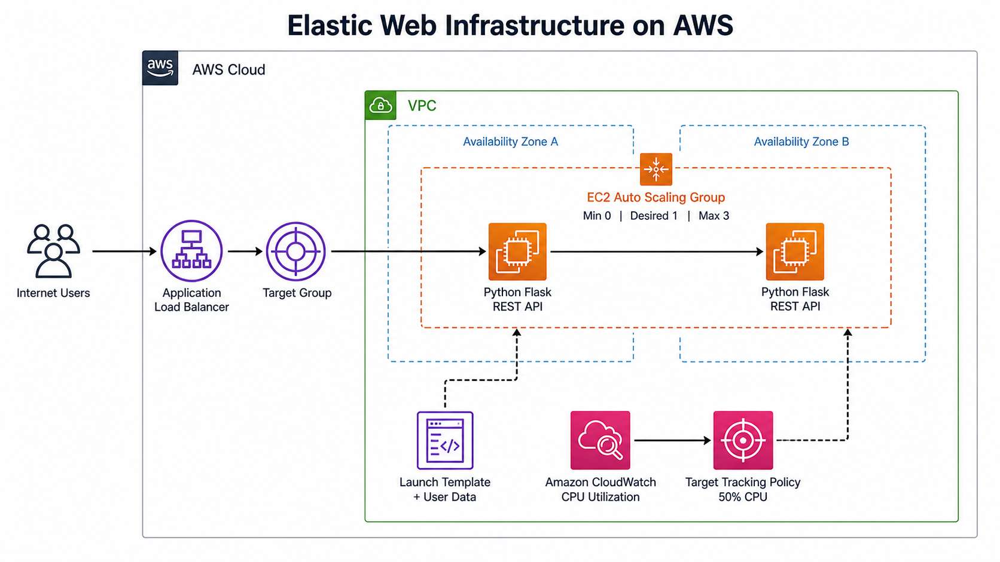

AWS Elastic Infrastructure: A Load-Balanced, Auto-Scaling Web Service
A Flask web service on EC2 behind a load balancer, with an Auto Scaling group that adds and removes instances as CPU load changes.

Project Overview
Scale-out: under simulated CPU load, the Auto Scaling group started new instances against a 50% average CPU target. Each one passed its health check and began serving traffic on its own.
Scale-in: once demand fell away, the group shut the extra instances down again — capacity following demand in both directions, not just upward.
What I Built
For UIUC Cloud Computing Applications, I deployed a Python Flask REST service on Amazon EC2 and set up everything around it: networking, health checks, bootstrapping and scaling. An Application Load Balancer and target group spread requests across every healthy instance. The instances run in an Auto Scaling group sized min 0 / desired 1 / max 3 across two availability zones, each launched from a template whose startup script installs dependencies, pulls the code and starts the service. A health endpoint tells the target group when a new instance is ready for traffic.
Design Decisions
- Self-bootstrapping instances. A new machine configures itself and starts serving with no manual step.
- Locked-down network. Security groups open the app port only to the load balancer, so every request goes through health-checked targets.
- Target tracking at 50% CPU. CloudWatch keeps average load near the target without hand-tuned thresholds.
The Result
Load tests confirmed scaling in both directions: new instances came up healthy and joined the load balancer under load, and the extras shut down once load dropped.